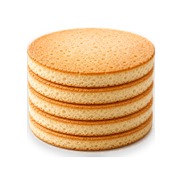
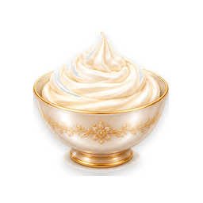
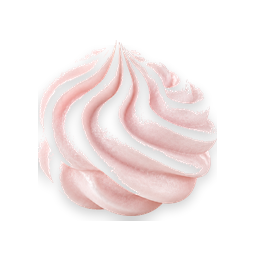

Paper · code-to-design · culinary book
Рецепт чего вы хотите добавить?

Торты Бисквитные, муссовые, многоярусные торты, сборка, покрытие, декор, упаковка.
Кремы и начинки Кремы, ганаш, меренга, конфи, курды, муссы, глазури и покрытия.
Зефир и конфеты Зефир, маршмеллоу, мармелад, пастила, суфле, конфеты.
Зачем это в Paper: в коде модал (#recipeTypeModal) сейчас только текст и radio.
В проекте уже есть 50+ PNG-иконок категорий (icons/categories/).
На canvas можно быстро согласовать визуал с иконками, отступами и состояниями — и затем
skill design-to-code перенесёт утверждённый макет обратно в index.html.